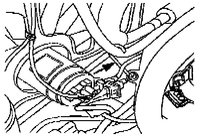

Hose/Line HVAC: Adjustments
Adjusting Clearance For A/C Discharge Hose:
The discharge hose from the A,C compressor to the condenser can rub against the coolant fan -V7- or the fan shroud when the vehicle is shifted from Reverse to Drive. (Shifting from Reverse to Drive will cause the engine to rock on its mounts).
- Check for adequate clearance between discharge hose and radiator coolant fan -V7- or fan shroud.
- Check discharge hose for evidence of rubbing.
If clearance is not adequate:
- Make sure that radiator is properly secured by upper retaining bolts.
- Ensure that engine mounts are not loose or damaged.
- Bend discharge hose retaining bracket (arrow) to make more clearance if necessary.